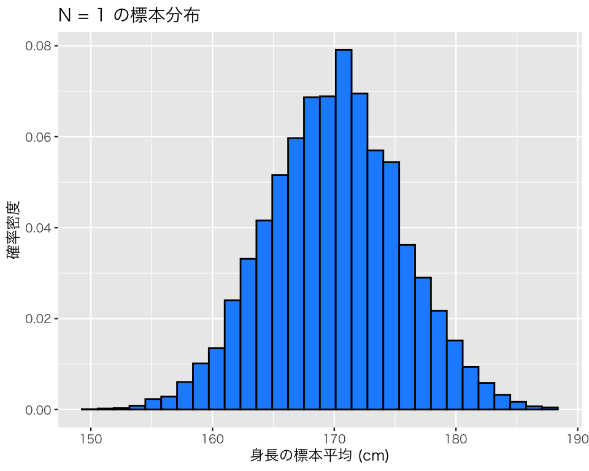
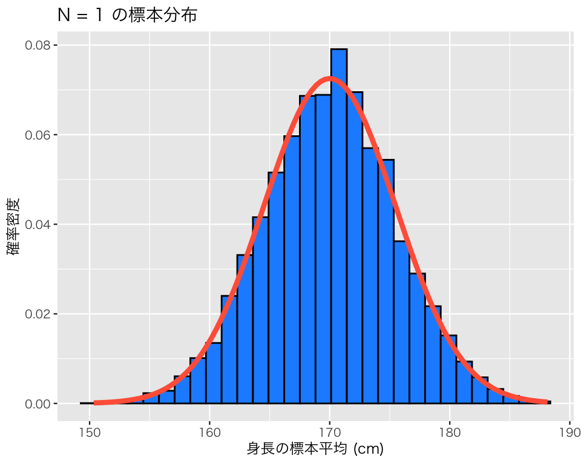
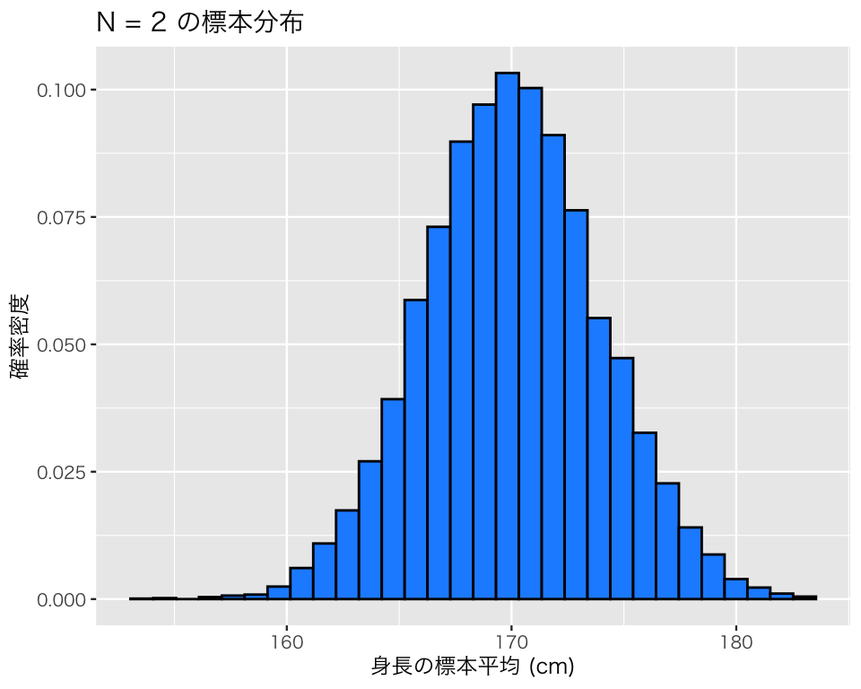
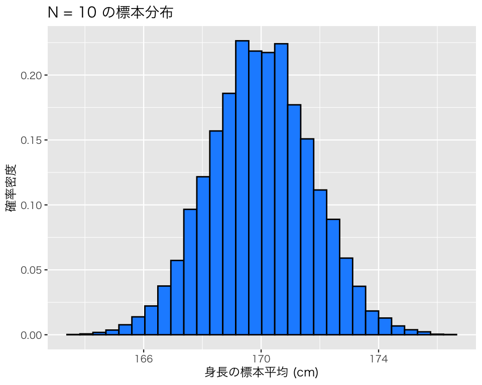
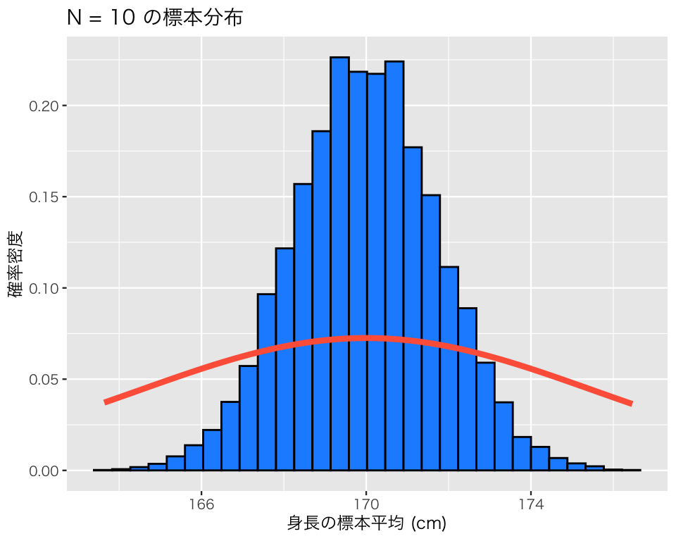
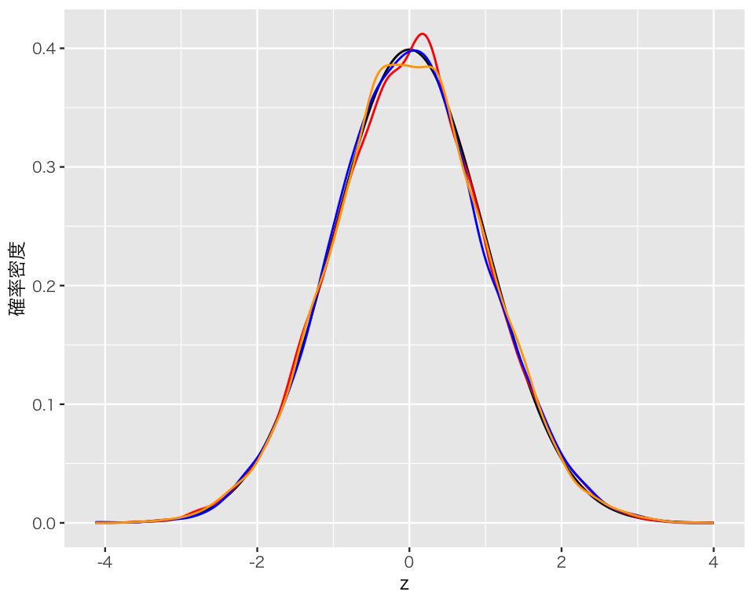

12 標本分布を理解する
今回の目標
- 標本分布を理解しよう！
- 標準誤差を理解しよう！
12.1 準備
必要なパッケージを読み込む。
次に、日本語が正しく表示されるようにする。
## 図のなかで日本語を使えるようにする
## フォントの設定はお好みで
## （Unix/Linux ではIPAexフォントのインストールが必要かも）
library(fontregisterer)
if (.Platform$OS.type == "windows") { # Windows
my_font <- "Yu Gothic"
} else if (capabilities("aqua")) { # macOS
my_font <- "Hiragino Sans"
} else { # Unix/Linux
my_font <- "IPAexGothic"
}
theme_set(theme_gray(base_size = 9,
base_family = my_font))12.2 標本分布のシミュレーション
12.2.1 シミュレーション問題の設定
母集団（成人男性全体）では、平均身長が170cm、身長の標準偏差が5.5cm であり、身長は正規分布に従うことを知っているとする。
mu <- 170 # 母平均
sigma <- 5.5 # 母標準偏差以下では、様々な標本サイズで標本を抽出し、その標本の平均身長を求める作業を 1万回ずつ繰り返すことにする。
n_sims <- 1e4 # シミュレーションの繰り返し回数12.2.2 標本サイズ (\(N\)) が1のとき
標本サイズ \(N = 1\) で標本を抽出し、標本平均を計算することを10^{4} 回n_sims 回）繰り返す。まず、\(N\) を設定する。
N <- 11回の標本抽出は、
h <- rnorm(N, mean = mu, sd = sigma)で行える。標本平均は、
mean(h)[1] 177.7841である。 これを1万回繰り返せばよい。
（本当はもっと簡単な方法もあるが） for ループを使ってシミュレーションを実行してみよう。
まず、結果を保存するために、10^{4} 個の値を保存する容器（ベクトル）を用意する。要素（中身）は NA にしておく。
sim_1 <- rep(NA, n_sims)シミュレーションを実行する準備が整ったので、forループでシミュレーションを実行する（forループ以外で実行する方法を知っている者は、その方法を利用してよい）。
結果をヒストグラムにしてみよう。
df1 <- tibble(sim_1)
hist1 <- ggplot(df1, aes(x = sim_1, y = after_stat(density))) +
geom_histogram(color = "black",
fill = "dodgerblue") +
labs(x = "身長の標本平均 (cm)",
y = "確率密度",
title = "N = 1 の標本分布")
plot(hist1)`stat_bin()` using `bins = 30`. Pick better value with `binwidth`.
このヒストグラムに、平均 170、標準偏差 5.5 の正規分布 (\(\mbox{N}(170, 5.5)\) と表記する) の確率密度曲線を重ね書きしてみよう。
df1$x <- seq(140, 200, length.out = nrow(df1))
df1$dens <- dnorm(df1$x, mean = mu, sd = sigma)
hist1_2 <- hist1 +
geom_line(data = df1,
aes(x = x, y = dens),
color = "red",
size = 1.5)
plot(hist1_2)`stat_bin()` using `bins = 30`. Pick better value with `binwidth`.
図を見る限り、標本平均の標本分布と、母集団の分布はとてもよく似ている。
統計量も確かめてみよう。
このように、標本平均の平均値は母平均とほぼ同じであり、標本平均の標準偏差（これを平均値の標準誤差 (standard errors: SE) と呼ぶ）は、母標準偏差とほぼ同じである。
12.2.3 標本サイズ (\(N\)) が2のとき
標本サイズ \(N = 2\) で、同様のシミュレーションを行ってみよう。 まず、\(N\) を設定する。
N <- 2あとは、さきほどと同様のコマンドを実行すればよい。ただし、結果を上書きしないように、結果に異なる名前をつける。
結果をヒストグラムにしてみよう。
df2 <- tibble(sim_2)
hist2 <- ggplot(df2, aes(x = sim_2, y = after_stat(density))) +
geom_histogram(color = "black",
fill = "dodgerblue") +
labs(x = "身長の標本平均 (cm)",
y = "確率密度",
title = "N = 2 の標本分布")
plot(hist2)`stat_bin()` using `bins = 30`. Pick better value with `binwidth`.
このヒストグラムに、平均 170、標準偏差 5.5 の正規分布 (\(\mbox{Normal}(170, 5.5)\)) の確率密度曲線を重ね書きしてみよう。
hist2_2 <- hist2 +
geom_line(data = df1,
aes(x = x, y = dens),
color = "red",
size = 1.5)
plot(hist2_2)`stat_bin()` using `bins = 30`. Pick better value with `binwidth`.先ほどとは異なり、標本平均の標本分布と、母集団の分布は少し異なる。標本分布の方が、母集団よりも狭い範囲に集まっていることがわかる。
統計量も確かめてみよう。
上のシミュレーションと同様、標本平均の平均値は母平均とほぼ同じである。しかし、標本平均の標準偏差である標準誤差 (standard errors; SE) は、母標準偏差よりもかなり小さくなっていることがわかる。
理論的には、標本平均の標準偏差は \(母標準偏差/\sqrt{標本サイズ}\) になるはずである。確かめてみよう。
sigma / sqrt(N)[1] 3.889087これは、上で求めた標準誤差にほぼ一致する。
12.2.4 標本サイズ (\(N\)) が10のとき
標本サイズ \(nN = 10\) で同様のシミュレーションを行ってみよう。 まず、\(N\) を設定する。
N <- 10あとは、先ほどと同様のコマンドを実行すればよい。ただし、結果を上書きしないように、結果に異なる名前をつける。
結果をヒストグラムにしてみよう。
df3 <- tibble(sim_3)
hist3 <- ggplot(df3, aes(x = sim_3, y = after_stat(density))) +
geom_histogram(color = "black",
fill = "dodgerblue") +
labs(x = "身長の標本平均 (cm)",
y = "確率密度",
title = "N = 10 の標本分布")
plot(hist3)`stat_bin()` using `bins = 30`. Pick better value with `binwidth`.
このヒストグラムに、平均 170、標準偏差 5.5 の正規分布 (\(\mbox{N}(170, 5.5)\)) の確率密度曲線を重ね書きしてみよう。
hist3_2 <- hist3 +
geom_line(data = df1,
aes(x = x, y = dens),
color = "red",
size = 1.5)
plot(hist3_2)`stat_bin()` using `bins = 30`. Pick better value with `binwidth`.
標本分布がさらに狭い範囲に集まっていることがわかる。
統計量を確かめてみよう。
先程と同様、標本平均の平均値は母平均とほぼ同じである。また、標本平均の標準偏差である標準誤差 (standard errors; SE) は、母標準偏差よりもより一層小さくなっていることがわかる。
理論的には、標本平均の標準偏差は \(母標準偏差/\sqrt{標本サイズ}\) になるはずである。確かめてみよう。
sigma / sqrt(N)[1] 1.739253これは、上で求めた標準誤差にほぼ一致する。
12.2.5 実習課題
標本サイズ \(N\) を50、100にして、同様のシミュレーションを実行しよう。どのようなことがわかるか文章にまとめて整理しよう。
12.3 誤差の分布
標本平均の誤差は、 \[誤差 = 標本平均 - 母平均\] と表すことができる。また、標本平均の平均値（期待値）は母平均に等しいので、 \[誤差 = 標本平均 - 標本平均の平均値\] でも同じことである。
したがって、上で実行した3つのシミュレーション（それぞれ、\(N = 1, 2, 10\)）の誤差 err_1, err_2, err_3 は、
である。さらに、それぞれを標準誤差（標本平均の標準偏差の推定値）で割ってみる。
平均値を引いて、それを標準偏差で割っているので、これは標準化 (standardization あるいは \(z\)化) である。
ここで、標準正規分布 \(\mbox{Normal}(0, 1)\) の分布を図にしてみよう。
df_nml <- tibble(z = seq(from = -4, to = 4, length.out = 1000))
df_nml$dens <- dnorm(df_nml$z, mean = 0, sd = 1)
stdn <- ggplot(df_nml, aes(x = z, y = dens)) +
geom_line() +
labs(y = "確率密度")
plot(stdn)
この図に、先ほど計算した z1, z2, z3 の分布を上書きしてみよう。確率密度 (density) を加えるため、geom_density() を使う。
df_z <- tibble(z1, z2, z3)
dens_lines <- stdn +
geom_density(data = df_z,
aes(x = z1, y = after_stat(density)),
color = "red") +
geom_density(data = df_z,
aes(x = z2, y = after_stat(density)),
color = "blue") +
geom_density(data = df_z,
aes(x = z3, y = after_stat(density)),
color = "orange")
plot(dens_lines)
このように、標本平均を標準化すると、標準正規分布に似た分布が出てくる（4つの曲線が重なり合っていて区別が難しい）。よって、標準正規分布を利用した推定ができそうに見える（本当にできるかどうかは他の機会に解説する）。
12.4 標本分布のシミュレーション
標本分布のシミュレーション動画 (MP4) を例として示す